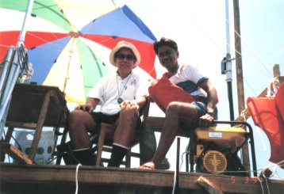

最新情報
1997 BS7H（ Scarborough Reef）DX-Pedition
DXペディションの全記録

【フィリピン海軍との遭遇】今回のスカボロー・リーフのBS7H運用に関して、フィリピン政府が異常とも思える反応を示し、緊張状態を作り出しました。これはわれわれが広州を出発して間もなく、「フィリピンが領有権を主張している南紗諸島のコタ島近くの岩礁に中国船が接近、 建造物を建てたことから、フィリピン政府が中国政府に抗議、海軍が周辺海域の監視を強化した（4月28日付け毎日新聞＝要旨＝）」 ことから始まりました。 南紗諸島でトラブルが発生したらしい、という情報はすぐ船上のわれわれにも知らされましたが、 500km以上も離れているスカボロー・リーフには関係の無い事と楽観していました。 スカボロー・リーフは中国の領土として、過去2度にわたって同じ場所から中国政府のコールサイン・BS7Hで運用した 実績もあったからです。 過去2回と異なる点を上げれば、今回初めて中国本土から中国の船で出掛けたという事でしょう （過去2回はフィリピンから出港した）。 われわれアマチュア無線の運用（DXCCの条件も含め）方法からすれば、何の疑問も無かった訳です。 その後に問題となった領土紛争については、直接関与する問題ではないので、ここで触れるのは控えたいと思います。 ただ、現地で直接フィリピンの軍関係者と接触したわれわれは、巷に流れている噂とは違い、 終始友好的なものであったことをお知らせしておきます。 彼らの訪問により、運用を中断しなければならないといった“迷惑”さはあったものの、 少なくとも人命に関わるような不安を感じる事は全然なかったのです。 【接触の経緯】4月30日午後、#2ロックがQRVを開始したあと、私は#1ロックで運用開始に向け最後の準備に忙殺されていました。 突然、頭上を2機のジェット機（偵察機）が旋回し始めました。 それがフィリピンのジェット機である事はすぐに察しが付きました。「何でこんな所まで！」と言うのが第一印象でした。 迷彩色の機体は、2度、3度と頭上をかすめて行きます。 #2ロックでオペレートしていた、W6RGG・Bobの本船を呼ぶ緊張した声が、連絡用の2mハンディーから聞こえてきます。 “パイロットの顔が見える”ほどの近くを飛ばれ、パニック状態になっていたのかも知れない。 何しろマイクに向かって自分のコールサインで怒鳴っていたほどだったから...。 10数分で2機のジェット機は姿を消したが、嫌な予感がしたのは確かです。 翌 5月1日、朝起きてみると、われわれの船の他に見慣れない船が2隻、近くに停泊しているのを確認。 それがフィリピン海軍の軍艦であることはすぐ理解できました。 昨日の偵察機の連絡で“駆けつけ”てきたのでしょう。 あまり気にもせずに、午後班の私は12:00から、 一人で#1ロックで運用していた。 21MHZでパイルをさばいていると、何となく人の気配。 ログから顔を上げるとロックの下に見慣れないゴムボートが一隻接近している。 6人ほどの中の一人が手まねで「ヘッドホンを外せ」と言っているようだ。 #1ロックは背の高い岩礁なので、相手は私を見上げる状態で話す事になる。 ヘッドホンを外すと何か言っている。 「あなたは日本人か？、中国人か？」と聞いているようだ。 突然の訪問でどう応答していいのか返事に困り、発電機の騒音で何を言っているのか聞こえない （実際に聞きにくかった）と、手まねで「向こうの船で聞いてくれ」と断る。 ボートは岩礁を周回しながら、アンテナなどを偵察し数分後、JA1BKが運用している#2ロックの方向へと立ち去って行った。 本船に戻ってから溝口さんに確認したところ、#2ロックでは写真を撮ったり、われわれの名簿のメモを渡した り、友好的に話し合ったと聞き、ひと安心。 翌2日、軍艦は3隻に増えている。 その夜、144MHZのFMでN7NG・Wayneとフィリピン海軍が交信しているのを聞いていると、 #1ロックのビームアンテナ（6m）をかなり気にしているようだ。 アンテナは何処を向いているのか？ 周波数は何処か？ など。 #1ロックの様子を知らないWayneは、 適当に返事をしていたが...。 運用最終日の5月3日（この日は私の誕生日だった）、今日も朝06:00から、一人で#1ロックで6mを運用していた。 今日は6mに専念するため#1ロックでのHF運用は一時休止。 6ｍでCQをキーイングしながら周囲を見回す余裕もある。 02:20z頃から6mで初めてJAとQSOして、気を良くしているところに、フィリピン海軍のボートが接近してきた。 手を振って笑顔で迎えると、岩礁の険しい側から上官らしい隊員がよじ登ってきた。 ホーネストと名乗るこの兵隊がいろいろ質問してくる。 例によって質問は、同じ事ばかり。 “あなたは何処に住んでいますか？”から“周波数は？”“相手は？”“アンテナの方向は？”...etc。 説明しても、どうもアマチュア無線に関する専門的な事は知らないようなので、 「ところで、アマチュア無線を知ってますか？」と聞くと、「知らない」との事。 「･･･でも、アマチュア無線を知ってるのがいるから」と、ボートで待機していた隊員を呼んでくれる。 ヘンリー（Henry）という隊員が上がってきた。 「コールサインは何？」と聞くと、はにかんだ表情で 「DY1DEN」と答えてくれた。 変なところでハムのアイボールＱＳＯが始まった。 彼はVHFでパケット通信を熱心にやっているのだとか。 HFのDXに興味を持っているハムだったら、 われわれの正体も早く理解してくれたのに･･･と少し残念だった。 隊長 「ところで、いつまで此処にいるのですか？」 私 「今日の午後に帰る事になりました」 隊長 「えッ、6日に帰るのではないのですか？」 私 「イヤ、急に今日帰る事にしました」 隊長 「奥さんが恋しくなったんですか？」 私 「・・・・」 隊長 「今度はいつ頃来ますか？」 私 「まあ、こんな何んにも無いところに来るなんて、クレージーですからね」 隊長 「・・・・（ナットク顔）」  
#1ロックを訪れたフィリピン将校（右）とゴムボート  1997 BS7H index  BS7H 1997 Home Page BS7H 1997 Home Page |